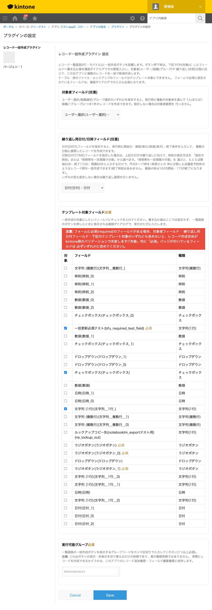

GovAppsプラグイン 安全性を確認できる無料kintoneプラグイン集
レコード一覧画面(PC・モバイル)のボタン押下で、テンプレート値・対象者(ユーザー/組織/グループ)・ 繰り返し(定例)日程を確認ダイアログで入力し、この自アプリに複数レコードを一括で新規作成する プラグインです。日付の繰り返し(毎日/毎週/毎月)に加えて、日時(DATETIME)フィールドなら 時刻の繰り返し(固定の時刻/時間帯を一定間隔で分割)も設定でき、会議室予約枠のようなレコード群も まとめて作成できます。
繰り返し用フィールドに日時(DATETIME)フィールドを指定すると、日付の繰り返し(毎週の曜日複数選択など)に加えて、時間帯を一定間隔で分割する繰り返しも設定できます。たとえば「来週の月〜金、9:00〜17:00を1時間ごと」と指定するだけで、平日5日×8枠=40件の予約枠レコードを一括作成できます。終了日時フィールドをあわせて指定すれば、各枠の終了日時(開始時刻+間隔)も自動的に書き込まれるため、開始・終了のペアを持つ会議室予約枠アプリにそのまま使えます。
対象者フィールドに組織を指定し、「組織で絞り込んでユーザーを選択」または「組織を選んで所属ユーザー全員に展開」で対象メンバーを選ぶと、1人につき1件の日報レコード(内容は未入力)を日付の繰り返しと組み合わせて事前に作成できます。あらかじめ全員分の日報レコードを用意しておくことで、一覧画面やグラフで「まだ提出されていない(内容が空欄の)レコード」を数えたり絞り込んだりしやすくなり、提出状況の可視化・催促に使えます。
「組織を選んで所属ユーザー全員に展開」「グループを選んで所属ユーザー全員に展開」を使うと、選んだ組織・グループの所属メンバー全員に、同じ内容のタスクレコードを1人1件ずつ一括で配布できます。毎週の定例ミーティングの議事メモひな形や、月次の報告タスクなど、決まったメンバーに定期的に同じ種類のレコードを配る用途に使えます。組織は親子階層のツリー表示で選べるため、大きな組織でも目的の部署を辿りやすくなっています。
一覧画面のボタンを押すと、テンプレート値・対象者・繰り返し日程を入力する確認ダイアログが表示されます。作成予定件数がリアルタイムに表示され、上限(500件)を超える場合は実行できません。「次へ」を押すと、実際に作成されるレコードの一覧(対象者・日時の組み合わせ)を確認できる最終確認ダイアログに進み、「作成」を押すと一括でレコードが作成されます。完了後、作成できた件数(バッチ単位で失敗した場合はその範囲)が表示されます。
kintoneセキュアコーディングガイドラインに沿って実装時にチェックしています。特に重要な点は次のとおりです。
POST /k/v1/records.jsonを100件ずつのバッチで逐次(並列でなく)実行します。このAPIは「バッチ内で1件でも失敗すると、そのバッチに含めたレコードの登録がすべてキャンセルされる」仕様のため、失敗したバッチのみを結果に明示し、先行して成功したバッチの内容は残ることを利用者が判断できるようにしています。作成予定件数が上限(500件)を超える場合は、実行前にブロックします。kintone.api()経由でのみ実行し、外部サーバーへの通信は一切行いません。対象者を個別選択する場合、以前は全ユーザーを一覧表示していましたが、大規模な環境では使いづらい・重いという指摘を受け、「まず組織で絞り込んでから、その所属メンバーの中から選ぶ」2段階のUIに変更しています。組織一覧そのものも、親子階層をツリー表示することで大きな組織でも目的の部署を辿りやすくしています。kintone.user.getGroups())は、あくまでUI上の表示・非表示を切り替える機能であり、真の権限境界ではありません。実際に作成できるかどうかは、対象アプリのレコード追加権限・フィールド編集権限に委ねられます(設定画面にも明記しています)。textContent/createElementのみで組み立てており、ユーザー入力をHTML要素として出力することはありません。詳細な確認項目・確認日は下記GitHubのチェックリストに全項目を掲載しています。

このプラグインは、一覧画面のボタンを押すと、対象者ピッカーの表示のためにUser API
(組織一覧・グループ一覧をoffset/sizeで逐次ページング取得、選択した組織/グループの
所属メンバー一覧を選択数分だけ逐次取得)を呼び出します。最終確認ダイアログで実行を確定すると、
生成したレコード件数に応じてPOST /k/v1/records.jsonを100件ごとに逐次実行します
(例: 250件作成する場合は3回)。確認ダイアログの表示のみでキャンセルした場合、レコード作成のAPIは
実行されません。